Rizadores de pestañas
Mon, 13 Feb 2012 14:51:32 +0000
¡Hola a todas! Llevo un tiempo queriendo hacer una entrada sobre este tema. Creo que en general hay mucha desinformación. Acerca de cada cuánto hay que cambiarlo, si realmente es perjudicial o no para las pestañas, qué marcas son mejores, qué hay que tener en cuenta a la hora de elegirlo (porque no todos valen), [...]

¡Hola a todas! Llevo un tiempo queriendo hacer una entrada sobre este tema. Creo que en general hay mucha desinformación. Acerca de cada cuánto hay que cambiarlo, si realmente es perjudicial o no para las pestañas, qué marcas son mejores, qué hay que tener en cuenta a la hora de elegirlo (porque no todos valen), y sobre todo cómo usarlo correctamente.
Rizar las pestañas es un paso que no hay por qué hacer cada vez que nos maquillemos, pero que cuando lo hacemos, cambia totalmente la mirada, se ve mucho más abierta y expresiva, y también es de ayuda para las personas que las tienen muy rectas o lacias, y que no consiguen elevarlas con ninguna máscara.
Quisiera empezar por resolver algunas dudas que leo a menudo respecto al uso de los rizadores, siempre desde mi experiencia, por supuesto.
En primer lugar ¿es realmente necesario rizar las pestañas? Bien, necesario no es, pero sí marca una diferencia en el efecto de nuestra mirada. A veces, el hecho de simplemente rizarlas, sin aplicar máscara después, es suficiente para conseguir una mirada mucho más amplia, expresiva y despierta, y sobre todo, hace que las pestañas se vean el doble de largas.
¿Es malo para las pestañas el uso de rizadores? No. Sé que mucha gente piensa que sí y que es algo que está muy extendido, pero realmente no hay todavía ningún estudio que lo afirme. El usar rizador no estropea las pestañas, ni las parte, ni hace que se caigan. Pero lo que SÍ es súper importante es usar un rizador de calidad, con una goma que no presione en exceso y sobre todo, usarlo correctamente. Para mi la prueba evidente es que llevo usando rizadores desde que empecé a maquillarme de más jóven y nunca jamás se me han partido, ni caído ni nada parecido.
¿Cómo usar correctamente el rizador de pestañas?
- Ante todo, es importante encontrar un rizador de calidad. ¿Y cómo sabemos si lo es? Bien, en primer lugar, lo más importante es la calidad de la goma. Un buen rizador tendrá una goma de un grosor determinado, su calidad hará que no se desgaste tan rápido como otras, y también determina la presión que se ejerce sobre las pestañas cuando usamos el rizador.
- La presión del rizador también es muy importante. Hay algunos que no están bien amortiguados y crean más presión que los que sí lo están, ejerciendo una presión mucho más brusca, “doblando” las pestañas en vez de curvarlas.
- Para rizarlas bien, hay que mirar de frente al espejo, elevar ligeramente la barbilla para que miremos ligeramente hacia abajo y el párpado se estire. Con esto evitamos “pillar” la piel del párpado.
- El rizador ha de colocarse en la raíz de las pestañas ejerciendo una primera presión durante un par de segundos, después, subimos unos milímetros, para rizarlas en el centro y que adquieran una forma de C, y no de L.
- La presión ha de ser súper suave y delicada. Lo que ocurre con un rizador de mala calidad es que nos obliga a hacer mucha presión para conseguir rizarlas. Un buen rizador las rizará sin necesidad de apenas presionar, cuidando las pestañas y sin dañarlas en absoluto.
- Es mucho más perjudicial cómo frotan y restriegan algunas personas las pestañas al desmaquillarlas, que rizarlas con un buen rizador.
LO QUE NO DEBES HACER:
-
Utilizar calor: Existe la práctica de calentar el rizador con un secador de pelo para intensificar el efecto del rizador. Si tu rizador es bueno, NO necesitas aplicar calor para que queden mejor. El calor del secador, obviamente, en un pelo tan delicado como es el de las pestañas, es malísimo.
-
Rizar las pestañas después de aplicar la máscara: Esto es malísimo y mucha gente lo hace. Una vez la máscara está seca, la pestaña está rígida y ahí sí que podemos partirla si ejercemos presión sobre ella.
MANTENIMIENTO:
Esto es súper importante y muchas veces me he encontrado con gente sorprendida al saber que un rizador hay que cambiarlo cada X tiempo y que no basta con cambiar la goma.
- Los rizadores tienen un ciclo de vida de un año y medio más o menos. Es por eso que siempre vienen dos recambios de gomas y no se venden por separado: cada una dura aproximadamente 6/8/10 meses dependiendo la frecuencia de uso.
- Llega un punto que la goma se desgasta, que el mango del rizador pierde presión y esto hace que, como he dicho antes, la presión sobre la pestaña se vuelva brusca y las dañe.
- Hay que limpiar la goma siempre después de cada uso. Los restos de maquillaje pueden estropearla antes de tiempo.
- Cuando notes que el mango de tu rizador está muy suelto, que la goma tiene grietas (esto puede pellizcar las pestañas) o está muy blanda: tíralo.
TIPOS DE RIZADORES:
Existen dos tipos de rizadores en el mercado, los convencionales, con forma de tijera o pinza, metálicos y con una goma curvada, y los rizadores con calor. Como maquilladora, siempre tengo uno en el maletín porque hay veces, sobre todo la gente mayor, o personas con la pestaña muy corta, que es muy difícil pillar bien el pelo. En este caso son de gran utilidad porque es más fácil llegar a la base de la pestaña y además no ocupa espacio en el párpado. Para casos puntuales está bien tenerlo, pero para uso frecuente yo no usaría calor en las pestañas. Además, se tarda mucho más tiempo (el rizador tiene que calentarse, tienes que pasarlo por la raíz muy lentamente, etc) y además está pensando para usar después de la máscara, de lo que no soy nada partidaria, pero a veces (siempre puntualmente) si no queda más remedio, te saca del apuro. El que yo tengo es de Sephora.
Rizador con calor de Japonesque:

CÓMO ELEGIR EL RIZADOR ADECUADO PARA TI
Indudablemente todas habréis oído maravillas del rizador de Shu Uemura. Es uno de los más famosos, y aunque es buenísimo y es uno de mis favoritos, lo cierto es que no es adecuado para todo el mundo (ni éste ni ninguno). Cuando vayas a comprar un rizador, debes fijarte en su tamaño y en su arco, para que se adapte bien a la forma y tamaño de tus ojos.
Si tienes el ojo almendrado, hundido o pequeño, el rizador con la forma similar al de MAC, por ejemplo, te irá mejor que el de Shu Uemura, el cual es perfecto para las asiáticas porque tienen una cuenca mucho menos profunda y el párpado más plano, por eso este rizador tiene un arco menos pronunciado. En nuestro caso, si tu ojo es grande y no muy ovalado, te irá mejor el de Shu que otro más curvado.
FAVORITO
Kevyn Aucoin: The Eyelash Curler
£ 18 (21€ aprox)
Donde comprar: Mise Beauty

Este es sin duda el MEJOR rizador de pestañas que he probado. Os lo digo porque he probado muchos: Chanel, Shu Uemura, Japonesque, MAC (este es uno de los que más me gustan para uso general también), Tweezerman… no sólo para mi si no también en clientes. No me extraña que tenga el premio de la revista Allure como mejor producto de belleza durante los años 2002, 2003, 2004, 2005 y 2011.
El secreto en primer lugar es la goma. Es súper suave y gruesa, y está hecha de una resina especial de larga duración y que es súper delicada con las pestañas. La forma del mango y la amortiguación que tiene, hacen que con una presión súper leve, curves las pestañas totalmente, sin necesidad de insistir. La curvatura aguanta mucho, y gracias al arco y a la goma, se curvan muy bien desde la raíz, quedando súper elevadas y no dobladas, en forma de L como hacen algunos rizadores.
Si eres maquillador, lo necesitas. Es increíble lo bien rápido que se rizan las pestañas, y su forma hace que resulte muy fácil cuando se usa desde otro ángulo (es decir, para hacérselo a otra persona).
Sé que habrá gente que piense que no le conviene comprar un rizador todos los años (si no se usa frecuentemente, dura muchísimo más), pero la verdad es que 20€ en un año por la salud de mis pestañas, a mi no me molesta gastarlo (y obviamente porque lo necesito para trabajar).
Los ejemplos que yo he puesto hacen referencia a los rizadores que yo he usado, pero por supuesto también habrán rizadores económicos y que funcionen bien, pero hay que fijarse en lo que os he expuesto más arriba.
TRUCO: Para que la curvatura del rizador dure todo el día y no caiga, es súper efectivo utilizar máscara waterproof.
Espero que os haya sido de ayuda esta entrada, y que miréis el rizador con un poco menos de miedo :P Que, aunque a simple vista parezca un instrumento de tortura medieval, es muy efectivo y transforma la mirada.
Soft Sixties
Fri, 03 Feb 2012 22:31:28 +0000
¡Buenas! Pues aquí me encuentro, maquillada y arreglada para salir con mis amigas. Pero… se ha cancelado el plan a última hora, así que, he sacado fotos del maquillaje que me acabo de hacer, ¡para aprovecharlo al menos! Lo he titulado soft sixties porque me recuerda al maquillaje típico de los sesenta: eyeliner y cuenca marcada, [...]

¡Buenas! Pues aquí me encuentro, maquillada y arreglada para salir con mis amigas. Pero… se ha cancelado el plan a última hora, así que, he sacado fotos del maquillaje que me acabo de hacer, ¡para aprovecharlo al menos! Lo he titulado soft sixties porque me recuerda al maquillaje típico de los sesenta: eyeliner y cuenca marcada, pero muy suave y más “ponible”. Realmente es muy sencillo de hacer, y queda bastante resultón. Por cierto… me he dejado las cejas un poquito más anchas. Hace poco me puse a ver vídeos y fotos antiguas y me di cuenta de que me había emocionado un poco depilando :P Espero que os guste, ¡que paséis un buen fin de semana!
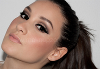
PIEL:
- Una capa de la base Sheer Glow de NARS en el centro del rostro, y encima una capa fina de F&B de MAC.
- Corrector Pro Longwear NC30 de MAC
- Polvos sueltos Loose Powder de NARS
- Colorete Harmony de MAC a modo de contorno suave, y Peachykeen de MAC en el centro de las mejillas
- Pigmento Naked de MAC a modo de iluminador (pómulo, arco de la ceja, puente de la nariz, lagrimal)
OJOS:
- Sombra Brulé de MAC (todo el párpado a modo de base)
-
Medium Pencil de Illamasqua en el tono “Sorceress” para marcar la cuenca. Esto hace que la sombra se adhiera mejor, no se difumine tanto y que el corte se vea más nítido.
- Pigmento Naked de MAC en el párpado móvil
- Sombras Espresso y Carbon para marcar la cuenca del ojo, y sombra Kid para degradarlas un poco (todas de MAC)
- Sombra Kid de MAC a ras de las pestañas inferiores
- Mascara Shocking de YSL en las pestañas superiores, y mascara “Bottom Lash” de Clinique en las inferiores
- Pestañas postizas “Demi Wispies” de Ardell
-
Chromaline “Black Black” de MAC para el delineado. Después lo fijé con sombra negra muy concentrada, ¡esto hace que se vea ultra negro!
- Sombra Mystery de MAC para definir las cejas
- Gel fijador de cejas de Illamasqua
LABIOS:
- Labial Patisserie y Creme d’ Nude de MAC mezclados


Y para las más atrevidas… :P
Labios: Labial Lady Danger de MAC + Plushglass Wildly Lush de MAC

080 Barcelona Fashion: Backstage
Mon, 30 Jan 2012 18:44:09 +0000
¡Hola a todos! La entrada de hoy es muy especial para mi. El pasado día 27, gracias al equipo de MAC, pude estar en el Backstage de la pasarela 080. Una edición más, Barcelona 080 Fashion, ha contado con un equipo de maquilladores profesionales de M·A·C que, dirigidos por Baltasar González-Pinel, Senior Artist de M·A·C, crearon [...]
¡Hola a todos! La entrada de hoy es muy especial para mi. El pasado día 27, gracias al equipo de MAC, pude estar en el Backstage de la pasarela 080. Una edición más, Barcelona 080 Fashion, ha contado con un equipo de maquilladores profesionales de M·A·C que, dirigidos por Baltasar González-Pinel, Senior Artist de M·A·C, crearon los looks deseados por los diseñadores para presentar sus nuevas colecciones 2012-2013.
Además de poder estar en el backstage y presenciar alguno de los desfiles, lo más importante para mi es que pude charlar un ratito y conocer a Baltasar G Pinel. Os cuento todo a continuación!
Llegamos sobre la 1 del medio día al patio del museo Frederic Marès, que es donde estaba instalado el backstage. Nada más llegar, como el equipo de maquillaje estaba un poco liado, nos invitaron a ver el desfile de Martinez Lierah. Siempre me ha fascinado la diferencia entre lo que vemos fuera en el desfile y lo que pasa realmente en backstage. Es increíble el trabajo y esfuerzo que hay detrás: peluquería, maquillaje, vestuario, producción (y las modelos, que acaban muertas)… para tan solo unos minutos de desfile.
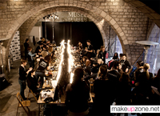
Tanto el equipo de peluquería como el de maquillaje no pararon ni un segundo. Todo empezaba con una demostración de Baltasar, donde mostraba el maquillaje del diseñador que correspondía en ese momento, para que después el resto del equipo empezase a trabajar con las modelos.
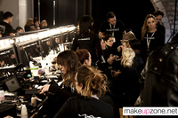
Fue un verdadero placer poder ver a Baltasar trabajar en directo. No sólo por su profesionalidad si no por el buen ambiente que había con el resto del equipo. Cada vez que un maquillador terminaba su maquillaje, tenía que ir a mostrárselo para que él diese el visto bueno, para lo que siempre tenía palabras agradables y de ánimo: “¡Muy bien! Está muy guapa, la has dejado guapísima”.Puede que para algunas personas esto sea insignificante, pero para mi y para el resto de maquilladores que hayan trabajado en estas condiciones, con tanta presión y tantas prisas, es bastante raro que tu superior dedique unos segundos a animarte y valorar el trabajo que acabas de hacer. Es de agradecer porque te sientes muy bien y trabajas mucho más motivada.
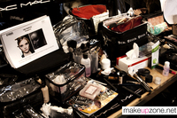
Durante el día 27, fueron varios los diseñadores que mostraron sus colecciones en la 080. En cuanto al maquillaje, la Face & Body fue la base más utilizada en prácticamente todos los looks. Pude sacar fotos y estos son los que más me gustaron:
KRIZIA ROBUSTELLA
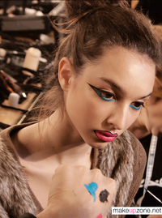
Los productos utilizados fueron Fluidline Blacktrack, Chromaline azul cielo, y una mezcla de lipmix fucsia y blanco para los labios, perfilados después con Blacktrack.
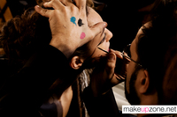
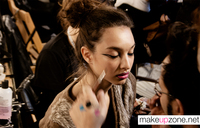
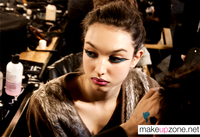
MANUEL BOLAÑO
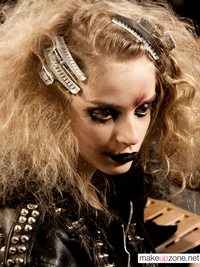
Se mezcló Fluidline Blacktrack en los labios, y con gloss para conseguir un efecto grasiento y corrido en los ojos. También imitaron golpes en la piel de las modelos.
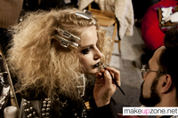
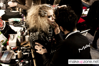
TONI FRANCESC
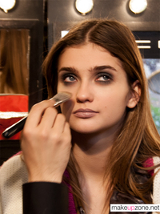
En los ojos se utilizó Fluidline Blacktrack mezclado con corrector Pro Longwear. y en los labios se hizo una mezcla de labial rosa, gris y corrector para conseguir un tono rosa violáceo sucio.
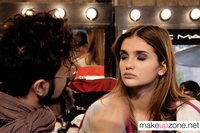
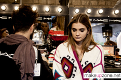
Gracias al equipo de MAC, nos pudimos mover a nuestro antojo por todo el recinto, tomar las fotos que quisiéramos y también grabar vídeo. En la parte de fuera había un village donde había servicio de maquillaje por parte de MAC, otro de peluquería de la mano de Redken, y otros muchos stands de Nespresso, Bacardi, Heineken… donde todos los asistentes podían degustar lo que quisieran gratuitamente, además de darse un retoque en el stand de MAC u ondularse el pelo en el puesto de Redken. Tengo un vídeo por montar del backstage que subiré en un par de días, y que adjuntaré a esta entrada.
Además de poder estar en el backstage, pude sentarme un rato a hablar con Baltasar y hacerle algunas preguntas.
No os puedo explicar la ilusión que me hacía conocerle, muchas ya sabéis cuánto le admiro. Es uno de esos artistas que siempre me han motivado e inspirado desde los inicios de mi profesión, y que siguen haciéndolo día a día. Ya me habían hablado mucho de él otras compañeras que han tenido la suerte de trabajar con él, y todo el mundo coincide en que es una persona encantadora. Al hablar con él, realmente te quedas embobada, escuchando todo lo que tiene que decir, porque derrocha un conocimiento, cultura y pasión sobre el maquillaje que pocos artistas tienen.
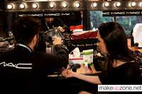
Cuando llegué estaba muy nerviosa, pero me tranquilizó en seguida la normalidad y cariño con el que me trató, como si me conociese de toda la vida. Contestó a todas mis preguntas muy amablemente, me prestaba mucha atención cuando le hablaba y no tuvo inconveniente en compartir conmigo algunos de sus trucos. Si tuviera que destacar algo, sería su humildad. Es una persona que, con toda su grandeza profesional, tiene los pies bien puestos en la tierra. Muy profesional, educado, y nada divo. Todo lo contrario, era como hablar con un amigo de toda la vida.
Me he topado muchas veces con algún maquillador (o pseudo maquillador), que me ha tratado tan mal, con una prepotencia y unos aires de divinidad que no comprendo… que luego conoces a profesionales como Baltasar, que con toda su trayectoria profesional y todo su prestigio, es la persona más normal y llana que puedas encontrar. Y comprendes por qué ha llegado tan alto. No es sólo su enorme talento como maquillador, si no su forma de ser, su humildad, su sentido del humor, su forma de hablar y de entender el maquillaje, lo cariñoso que es con la gente que tiene alrededor… no sé qué harán en MAC el día que falte, porque como él no hay dos.
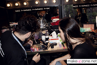
No exagero si digo que ese día fue uno de los mejores de mi vida. No todos los días tienes la oportunidad de no sólo conocer, si no de charlar e intercambiar pensamientos e inquietudes con quien es uno de tus mayores referentes en tu profesión. Me lo pasé genial y me trató tan bien… Se me hizo cortísimo y me hubiera pasado todo el día hablando con él, escuchando todo lo que tiene que decir… pero lamentablemente eso no era posible, jeje.
Cuando terminamos nuestra pequeña “entrevista” (la cual tengo grabada en vídeo y espero que la podáis ver mañana), se ofreció a retocar mi maquillaje, a lo que por supuesto dije SÍ :D No me podía creer que estuviese sentada en su tocador, de verdad, disfruté como una enana. Al salir de allí me fui con la bonita sensación de que había cumplido uno de mis sueños, y no puedo estar más que agradecida a MAC por darme esta oportunidad. Este es uno de los motivos por los que me doy cuenta de que tener esta página es de las mejores cosas que me han pasado profesional y personalmente, y que no es justo dedicarle ni un sólo segundo a las cosas negativas que a veces conlleva, porque por momentos como éste, merece totalmente la pena.
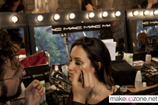
Os dejo con un vídeo y algunas fotos más del backstage , y me reservo algunas más con Baltasar para el próximo post con el vídeo que tengo con él :)
También quería aprovechar para recomendaros el blog que mi amiga y compañera Paloma acaba de abrir, con una entrada sobre esta misma pasarela, donde estuvo maquillando. Así véis fotos del resto de días y una perspectiva diferente de la experiencia, de alguien que lo vivió desde dentro.
Blog de Paloma: www.palomabautistasalido.blogspot.com
Espero que os gusten, ¡y nos vemos dentro de nada!
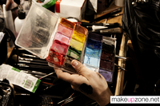
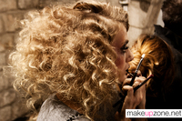
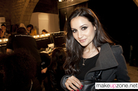
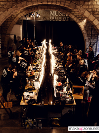
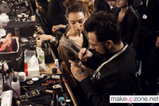
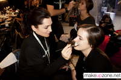
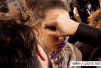
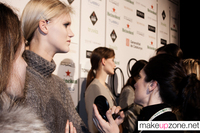
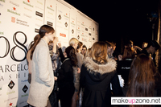
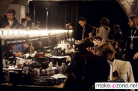
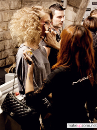
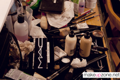
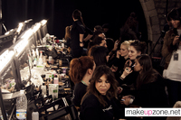
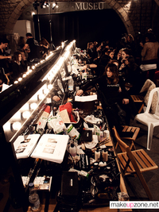
Más información sobre 080 Barcelona Fashion:
-
Página oficial: www.080barcelonafashion.com
-
Fotos y vídeo:www.080barcelonafashion.com/ca/audiovisuals/imatges_video
-
Backstage: www.080barcelonafashion.com/ca/audiovisuals/backstage
MAC Mineralize Skincare
Thu, 19 Jan 2012 22:38:02 +0000
¡Buenas! Después de un largo paréntesis aquí estoy de nuevo. ¡Qué ganas tenía! Por fin tengo internet y la mudanza está terminada, así que tengo muchas cosas que enseñaros. Entre las novedades que MAC presenta para estos meses, se encuentra una nueva línea de tratamiento que pasará a formar parte de su línea permanente. Esta [...]
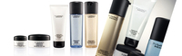
¡Buenas! Después de un largo paréntesis aquí estoy de nuevo. ¡Qué ganas tenía! Por fin tengo internet y la mudanza está terminada, así que tengo muchas cosas que enseñaros. Entre las novedades que MAC presenta para estos meses, se encuentra una nueva línea de tratamiento que pasará a formar parte de su línea permanente.
Esta colección la podréis encontrar a la venta en los stands de MAC de El Corte Inglés y tiendas MAC Pro a partir de Febrero.
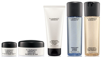
Mineralize Charged Water Moisture Eye Cream – 35€
Una crema para ojos intensa y lujosa. Enriquecida con la tecnología ionizada Super-Duo Charged Water. Hidrata y añade luminosidad a la vez que reduce, al instante y a largo plazo, el aspecto de ojeras, líneas e hinchazón.
Mineralize Charged Water Moisture Gel – 37.50€
Una crema ultra ligera con textura de gel que se absorbe al instante para dar a la piel una hidratación intensa. Esta fórmula, enriquecida con la tecnología Super-Charged Water, deja la piel más suave y luminosa. Aplica de día o de noche.
Mineralize Charged Water Face and Body Lotion – 31€
Una loción que fusiona polvo de diamante con la tecnología ionizada Super-Duo Charged Water para dar hidratación inmediata a la piel. Intensa y delicada. Deja la piel suave y flexible y refuerza su capacidad global de hidratación. Sin perfume.
Mineralize Charged Water Cleanser – 24€
Un desmaquillador liviano formulado con la tecnología ionizada Super-Duo Charged Water. Elimina todo el maquillaje (excepto el que es a prueba de agua y de larga duración) con una sola pasada: no requiere enjuague. Deja la piel nutrida, suave y limpia.
Mineralize Charged Water Revitalizing Energy – 20.50€
Una fusión de Mineralize Charged Water y polvo puro de diamantes. Reaviva, vigoriza y revitaliza la piel además de iluminarla. Mantiene la piel suave y flexible. Perfume de té verde refrescante y cítricos.
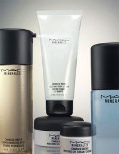
Durante este mes he estado probando el contorno de ojos y el gel-crema facial. Toda la línea contiene agua ionizada, para que os hagáis una idea es básicamente agua termal, que ya muchas conoceréis y que como característica contienen varios minerales e iones. El agua ionizada es el agua tratada con campos magnéticos. El resultado de este proceso es un líquido mucho más humectante, por lo tanto atraviesa más fácilmente la membrana de las células, facilitando su absorción y eliminando los deshechos nocivos para la piel, lo cual te da una sensación inmediata, a la vista y al tacto de limpieza y pureza, también es un antioxidante totalmente natural.
Mineralize Charged Water Moisture Eye Cream
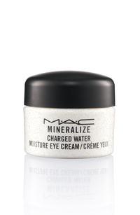
Este es el producto que más me ha gustado de los dos con diferencia. Al aplicarlo, la sensación es muy refrescante y el acabado que deja en la piel del contorno de ojos es muy, muy suave. Pese que no he notado un efecto evidente en cuanto a reducción de la hinchazón y la ojera, sí que afina visiblemente la piel y la deja muy bien hidratada. Lo que hice fue probar a mantenerlo en el frigorífico y entonces sí noté una descongestión visible, pero supongo que por el frío más que por la fórmula.
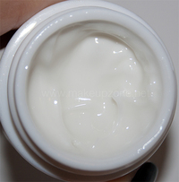
La textura es en gel y se siente acuosa, se extiende muy bien, se necesita apenas una pizca para todo el contorno. El corrector se aplica muy bien sobre él y no resulta graso, por lo que tampoco produce pliegues. Para la noche me gustan los contornos más untuosos, pero éste me ha gustado mucho para el día, mantiene la zona hidratada y afina las líneas de expresión.
Ingredientes:
Sucrose, Caffeine, Avena Sativa (Oat) Kernel Extract, Algae Extract Prunus Amygdalus Dulcis (Sweet Almond) Seed Extract, Acetyl Hexapeptide-8 Whey Protein/Lactis Protein/Prot�ine Du Petit-Lait, Aminopropyl Ascorbyl Phosphate, Glycine Soja (Soybean) Protein, Saccharomyces Ferment Filtrate, Sigesbeckia Orientalis (St. Paul’s Wort) Extract Dipeptide-2, Palmitoyl Tetrapeptide-7, Tetraacetylphytosphingosine, Phytosphingosine Gelidium Cartilagineum Extract, Crithmum Maritimum Extract Acetyl Glucosamine Yeast Extract/Faex/Extrait De Levure Rhodochrosite, Diamond Powder.
Como ingredientes se encuentran la cafeína (drenante), azúcar, avena, extracto de alga y polvo de diamante (aporta luminosidad, resistencia e hidratación).
Su precio son 35€ por 15ml.
Mineralize Charged Water Moisture Gel
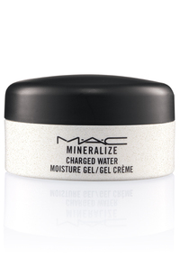
Creo que es la primera hidratante en gel de MAC, si no me equivoco. Este tipo de texturas son mucho más adecuadas que las cremas para pieles mixtas y grasas, porque resultan mucho menos comedogénicas y ligeras en la piel. Lo primero que notas al ponerte esta crema es una sensación muy agradable de frescor, parece muy untuosa al principio pero se absorbe súper rápido dejando la piel muy, muy suave. Realmente se nota al tacto, queda como aterciopelada.
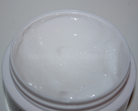
Nunca he sido muy fan de los productos de tratamiento de MAC para uso diario, aunque lo que sí es cierto es que todos sus productos funcionan muy bien debajo del maquillaje. Esta crema en concreto al dejar la piel tan suave y nada grasa, funciona muy bien eso, a mi personalmente no me ha generado brillos ni exceso de grasa (mi piel es normal/mixta). Sin duda creo que merece la pena al menos probarla. Lo más destacable es lo suavísima que deja la piel. El acabado además es semi mate, no se ve nada grasa pero tampoco deja la piel tirante.
La pega que le veo es el envase, como en el contorno de ojos, hubiera preferido formato de tubo, para no tener que meter los dedos y exponer todo el producto cada vez que lo use.
Ingredientes:
Prunus Amygdalus Dulcis (Sweet Almond) Seed Extract, Acetyl Hexapeptide-8, Whey Protein/Lactis Protein/Protéine Du Petit-Lait, Aminopropyl Ascorbyl Phosphate, Glycine Soja (Soybean) Protein, Saccharomyces Ferment Filtrate, Sigesbeckia Orientalis (St. Paul’s Wort) Extract, Dipeptide-2, Palmitoyl Tetrapeptide-7, Tetraacetylphytosphingosine, Phytosphingosine, Gelidium Cartilagineum Extract, Crithmum Maritimum Extract, Acetyl Glucosamine, Yeast Extract/Faex/Extrait De Levure.
Entre los ingredientes se encuentra extracto de almendras dulces, aminoácidos, y ninguna silicona, lo cual a mi me interesa bastante porque mi piel no las tolera nada bien
Su precio es 37,50€ por 50ml.
En general me parece que merece la pena, os animo a que os den alguna muestra y lo comprobéis por vosotras mismas, la sensación y el acabado que deja en la piel me ha gustado mucho.
Ya sabéis que dependiendo del stand puede llegar unos días antes o después, pero a partir de Febrero debería empezar a venderse en los stands. Espero vuestras impresiones, y nos vemos pronto por aquí, que tengo muchas cosas preparadas.
Favoritos de Otoño
Mon, 12 Dec 2011 17:48:43 +0000
Parece que fue ayer cuando hice la entrada de favoritos de verano… ¡cómo pasa el tiempo! La transición del verano al otoño es especialmente importante para el cuidado de la piel, porque ésta suele estar más “maltratada” por el sol, el calor… especialmente para las que vivimos en la costa. En algunos casos, cuando empezamos [...]

Parece que fue ayer cuando hice la entrada de favoritos de verano… ¡cómo pasa el tiempo! La transición del verano al otoño es especialmente importante para el cuidado de la piel, porque ésta suele estar más “maltratada” por el sol, el calor… especialmente para las que vivimos en la costa. En algunos casos, cuando empezamos a perder el tono, la piel se ve más apagada, cetrina e incluso pueden verse algunas manchas. Es la época ideal para empezar cualquier tratamiento con ácidos, ya que la exposición al sol es menor o nula.
La semana que viene publicaré una entrada actualizada sobre mi rutina de cuidado facial, porque desde hace ya casi un año he reducido bastante el número de productos, y me ha ido muy bien.
TRATAMIENTO

-
BIODERMA SEBIUM SERUM: Este producto es un gel con ácido glicólico al 15%. El ácido glicólico hace una exfoliación gradual en la piel, elimina las células muertas y ayuda a minimizar marcas y arruguitas superficiales. También ayuda a prevenir la aparición de granitos y a eliminar los existentes. Los resultados tardan en verse un mes y medio aproximadamente. La piel se ve un poco más lisa y el tono más igualado. Se lo he recomendado a amigas que tenían brotes de acné y les ha ido genial. Este tipo de ácidos sensibilizan mucho la piel, por lo que se recomienda usarlos por la noche y usar protección solar por el día. Siempre uso un producto de este tipo después del verano, devuelve luminosidad a la piel e uniforma el tono bastante. Cuesta unos 20€ más o menos, el precio puede variar mucho de unas farmacias a otras.
-
KORRES WHITE TEA CLEANSER: Este gel fluido limpiador ha sido el descubrimiento de estos últimos meses. He estado usando la limpiadora de arcilla blanca de Kiehl’s durante dos años, hasta el momento era la única que había usado, pero después de leer esta entrada me animé a probar un limpiador más natural, sin alcohol, para ver si de verdad notaba la diferencia en mi piel. La principal característica de este limpiador es que no contiene jabón, si no derivados vegetales en su lugar, y puede usarse para limpiar y desmaquillar el rostro y los ojos. Como limpiador es muy suave, y deja una sensación de limpieza y confort en la piel muy agradable, no reseca nada. Desmaquilla fenomenal, incluso la máscara de pestañas, y no me ha escocido en los ojos.
-
KIKO CLEANSING LIGHT OIL: Kiko también tiene su versión del desmaquillante en aceite. Yo lo he metido en el envase del aceite desmaquillante de Nars, porque el formato pump me resulta más cómodo que el spray. Siempre he usado el de MAC, pero animada por varias amigas que me decían que no notaban diferencia me animé a probarlo. El aroma del aceite de MAC me gusta mucho más, el de KIKO no acaba de entusiasmarme, pero a la hora de desmaquillar no noto diferencia, actúan exactamente igual, quizá deja un residuo ligeramente más graso, pero eso no me importa porque siempre me lavo la cara con el gel l limpiador para finalizar. Cuesta 6,90€, a diferencia del de MAC que cuesta 22€. Podéis leer esta entrada de La Colorópata para saber más sobre el producto.
-
NARS BRIGTHENING SERUM: Me encanta este producto, lo tengo ya desde hace varios años, normalmente lo uso para maquillar a clientes, aporta mucha luz y deja la piel hidratada. Yo me pongo bastante morena en verano, y cuando empiezo a perder el color me quedo amarilla, ésta crema tiene partículas rosadas que neutralizan un poco ese tono cetrino y al mismo tiempo dejan un aspecto satinado precioso. Me gusta debajo de la base de maquillaje o corrector. Es un poco caro, 65€, pero cunde muchísimo, lo compré hace año y medio y está prácticamente nuevo. También influye que el tratamiento de Nars está todo manufacturado por Shiseido, y ya sabéis los precios que tiene más o menos.
-
CEPILLO DE NYLON: Tengo este cepillo desde hace un montón de tiempo, pero no he sido muy constante, porque las primeras veces que lo usé me irritó un poco la piel. Hace poco me di cuenta de que era por la calidad del mismo, no recuerdo dónde lo compré pero me costó poco más de 2€. El que veis en la foto es de Sephora, no recuerdo el precio pero no es caro, creo que no llegaba a 10€ (ahora creo que hay uno nuevo y es de color rojo o blanco). Utilizo este cepillo por la noche al limpiarme la piel, en movimientos circulares, arrastra mejor la suciedad y además hace una leve exfoliación retirando todas las células muertas. Me noto la piel mucho más limpia y lisa desde que lo uso. Eso sí, no hay que presionar muy fuerte, el cepillo ya hace el trabajo solo. Si apretamos mucho podemos sensibilizar la piel.
MAQUILLAJE

-
NARS LUSTER BLUSH: No podría dar un motivo de por qué estoy usando este colorete más en otoño, la verdad, simplemente me ha dado por él. Lo tenía un poco olvidado (es lo que tiene coleccionar coloretes…), pero lo he estado usando casi a diario estos meses, me encanta el tono melocotón ligeramente dorado que tiene, el shimmer es muy finito, apenas se ve, y combina con la mayoría de los maquillajes que me hago a diario, que suelen ser con marrones o rojos.
- LAURA MERCIER TINTED MOISTURIZER: La famosísima crema con color de Laura Mercier. Se puede encontrar en dos versiones, la normal y la oil free. Ambas tienen SPF20. Sinceramente, yo no noto diferencia entre ellas, ninguna me saca más brillos que la otra. Lo único que noto es la diferencia de textura, la normal es menos densa y se extiende más fácil que la oil free. Según se me iba el bronceado, he estado mezclando el tono Sand de la versión oil free con el tono Nude de la versión normal, hasta que finalmente me he quedado con el tono de ésta última. Iguala el tono lo suficiente para darte un aspecto saludable, obviamente no tapa todo, pero sí tiene más cobertura que las cremas con color convencionales. El acabado es cremoso pero natural, por si os preguntáis en qué se diferencia con la F&B, que deja un acabado muy diferente, más jugoso y acuoso.
-
YSL SHOCKING MASCARA: Esta máscara es una extensión de la clásica Effet Faux Cils. ¿Diferencias? Ninguna. Lo que yo noto en ésta, es que no mancha nada (la otra al paso de las horas, según la temperatura podía manchar un poco el párpado) y no se seca tan rápido, que son las únicas pegas que le encontraba a la otra, así que para mi ahora es perfecta! El cepillo es muy parecido también, a simple vista podría decir que son iguales.
-
SIGMA #F86 Y #P84: Ya he comentado en varias ocasiones que las brochas de pelo de sigma no son santo de mi devoción, excepto tres o cuatro, aunque es cierto que desde las primeras que sacaron a las que tienen ahora, las han mejorado o eso creo, porque el pelo no es el mismo, y el mango y la virola los veo diferentes en algunas. Pero las sintéticas me encantan, estas dos son nuevas, salieron hace unos meses complementando a las famosas F80 y F82. La F86 tiene forma cónica, no es plana, es más ancha en la base y menos tupida en la punta, por lo que no absorbe tanto producto como las otras. Su forma también hace más fácil llegar al contorno de los ojos, aletas de la nariz, etc. Desde que la tengo he dejado la F82 en el cajón.
La P84 es pequeña y tiene corte diagonal. El uso que le estoy dando es para los correctores en crema, y digo crema no fluidos porque éstos los absorbe casi completamente, pero hace más natural la aplicación de los correctores más densos, porque controla bastante el producto que queda en la piel y lo difumina muy bien. También la uso para el párpado móvil, para igualar el tono con el corrector o con una sombra en polvo a modo de base. En el set SigmaX podéis encontrar muchas más brochas, pero desde mi experiencia estas son las más destacables.
-
LAURA MERCIER LIP GLACÉ “BABY DOLL”: Es uno de los tonos de gloss más vendidos de Laura Mercier. Tampoco es un tono especial que no se pueda encontrar en ninguna marca, porque es bastante clonable, pero es que me encanta la textura, no es nada pegajoso, hidrata mucho y aguanta bien, el color es súper ponible, lo estoy usando muchísimo. Podéis ver una foto aquí.
-
MAC CREAM COLOUR BASE “FABULUSH”: Otro producto que tengo desde hace muchísimo tiempo y que he redescubierto. Este tono es pro, y no estoy segura de si sigue a la venta porque como os digo lo tengo desde hace mucho tiempo. Es un rojo anaranjado y tiene pequeños destellos dorados, me encanta y no es de los CCB más grasos que tengo, me aguanta muy bien.
-
NARS LARGER THAN LIFE LONG-WEAR EYELINER: De verdad, no he probado lápices más fijos que estos ¡son una pasada! Como base, para delinear… no se mueven NADA (hay que trabajarlos rápido, eso sí). Quiero dejar claro que estos lápices no están indicados para el interior del ojo (se pueden usar perfectamente, pero de este modo no les vais a sacar el máximo partido), son resistentes al agua, por lo tanto la repelen, así que no esperéis una gran duración en la línea de agua, pero por fuera… de verdad, es increíble la duración que tienen. Id al stand, poneros algunos en la mano e intentad quitarlos cuando se sequen, ¡no se van! Además, son retráctiles e incluyen un saca puntas en el extremo. Yo tengo dos tonos, el St. Marks Place que veis en la foto, es morado y ha salido con la colección de esta navidad, y el Via Appia, que si conocéis el lápiz Teddy de MAC, se parecen mucho, el de Nars es un poco más oscuro. Podéis ver todos los tonos en Temptalia.
Hasta aquí mis favoritos de los tres últimos cinco meses, no es mucho pero es que no soy de comprar por comprar, en general tengo ya de todo y soy bastante selectiva con las cosas que compro, me tienen que llamar de verdad la atención. Nos vemos con esta entrada en Primavera :)
MAC Spring/Summer 2012 Trends
Tue, 07 Feb 2012 19:44:12 +0000
¡Buenas! Hoy quiero enseñaros varias imágenes con las tendencias para esta primavera/verano que se han podido ver en las fashion week de NY, Londres, Milán y París, donde MAC ha sido el maquillador oficial. Hay algunas fotos realmente bonitas y maquillajes muy inspiradores. He sentido la necesidad de compartirlo, ya que muchas veces me preguntáis [...]

¡Buenas! Hoy quiero enseñaros varias imágenes con las tendencias para esta primavera/verano que se han podido ver en las fashion week de NY, Londres, Milán y París, donde MAC ha sido el maquillador oficial. Hay algunas fotos realmente bonitas y maquillajes muy inspiradores. He sentido la necesidad de compartirlo, ya que muchas veces me preguntáis dónde consigo ver los maquillajes de las pasarelas actuales.
Este tipo de fotos son muy interesantes porque reflejan las tendencias del momento y además detallan los productos utilizados y cómo han sido utilizados, que en muchas ocasiones son productos que están por salir en los próximos meses, o siempre hay alguno que puedes tener y descubres una forma diferente de utilizarlo. ¡Espero que os guste!

DSQUARED2

Key Artist: Charlotte Tilbury
OJOS
-
MAC Pro Black Black Chromagraphic Pencil: Delineando el ojo por dentro y por fuera
-
Venetian Tarnish Metal-x Cream Shadow: Difuminada en todo el párpado hasta la ceja y bajo las pestañas inferiores
-
MAC Pro Gold Glitter: Aplicado sobre la sombra Venetian Tarnish Metal-x
-
False Lashes Mascara: Para definir las pestañas
LABIOS
-
Cup of Joe (Trend Palette) (disponible para primavera 2012)
ROSTRO
-
c5 Face & Body: Para broncear el rostro
-
Pro Longwear Concealer: Donde se necesite perfeccionar
-
MAC Pro ‘Sculpt’ Sculpting Powder: Difuminado bajo los pómulos
AQUILANO

Key Artist: Lottie
OJOS
-
Fusion Gold Metal-x Cream Eye Shadow: Difuminada hasta la ceja
-
MAC Pro Taupe Powder Blush: Difuminado en la cuenca y bajo las pestañas inferiores
-
MAC Pro Shine Mixing Medium: Aplicado en los párpados con los dedos
-
Zoomblack Zoom Lash: Sólo en las pestañas superiores
LABIOS
- Oak Lip Pencil
- Woo Me Kissable Lipcolour (disponible primavera 2012)
- Clear Lipglass
ROSTRO
- Face & Body
- Select Moisturecover
- Studio Careblend/Pressed
-
Fusion Gold Metal-x Cream Shadow : Iluminador sobre el hueso del pómulo y arco de la ceja
- Something Special Cream Blush
- Inmortal Flower Powder Blush (disponible primavera 2012)
ASHISH

Key Artist: Georgina Graham
OJOS
- MAC Pro Glitter Pink: Presionado sobre vaselina
LABIOS
-
Night Moth Lip Pencil: Perfilando y difuminado
-
Cyber Lipstick: A pequeños toques irregulares
- Clear Gloss
ROSTRO
- Face & Body
- Studio Careblend/Pressed
ERDEM

Key Artist: Andrew Gallimore
OJOS
-
Lip Conditioner: En los párpados como base
-
Plushblack Plush Lash Mascara: Sobre las pestañas curvadas
-
Beguile Brow Set: Peinando las cejas hacia arriba
LABIOS
-
Scarlet Ibis Lipstick (disponible primavera/verano 2012): Aplicado muy suave y difuminado sin llegar al borde
-
MAC Pro Basic Red Pigment: Difuminado en el centro del labio con la brocha #217 para dar un aspecto aterciopelado
-
MAC Pro Vellum Eye Shadow: En el centro del labio para iluminar
ROSTRO
-
Face & Body: Aplicada con la brocha #188
-
Select Moisturecover: Aplicado con la brocha #217 donde se precise
HAIDER ACKERMANN

Key Artist: Stéphane Marais
OJOS
-
Coffee Eye Pencil: A ras de las pestañas superiores e inferiores, difuminado en todo el párpado
-
Mulch Eyeshadow: Difuminada sobre Coffee Eye Pencil
-
MAC Pro Medium Blot Powder/Loose: En el arco de la ceja para un efecto mate
-
MAC Pro Shine Mixing Medium: Aplicado sobre los párpados para un efecto húmedo
LABIOS
ROSTRO
- Face & Body
-
MAC Pro Tint Cream Colour Base: Difuminado bajo el hueso del pómulo para esculpir
HOUSE OF HOLLAND

Key Artist: Lucia Pica
OJOS
-
MAC Pro ‘Basic Red’ & ‘Genuine Orange’ Chromacake: Mezcladas y aplicadas sobre el párpado móvil
-
Studio Finish Concealer: Sobre el párpado para difuminar MAC Pro ‘Basic Red’ & ‘Genuine Orange’ Chromacake en los párpados
-
MAC Pro Shine Mixing Medium: Aplicado sobre los párpados para dar un efecto húmedo
-
Smolder Kohl: Aplicado bajo las pestañas inferiores para definir
-
Fluidline Blacktrack: Sobre Smolder Kohl para más intensidad
-
Carbon Eye Shadow: Sobre Smolder Kohl & Blacktrack para fijar
LABIOS
- MAC Pro Shine Mixing Medium
ROSTRO
-
Strobe Cream: Aplicada en todo el rostro para iluminar
-
Studio Finish Concealer: Aplicado donde sea necesario
-
MAC Pro Mixing Medium: Aplicado sobre los pómulos, centro de la frente y barbilla para aparentar humedad
JEREMY SCOTT

Key Artist: Val Garland
OJOS
-
MAC Pro Chromaline Black Black: Delineando el párpado superior, y bajo las pestañas inferiores, dejando un espacio
-
Coffee Eye Pencil: Trazando una línea con el pincel #266 en la cuenca del ojo
-
Dazzlelight Eye Shadow: En el lagrimal para iluminar
-
#43 Lash: En las pestañas superiores
-
Zoomblack Mascara: Aplicada en las pestañas superiores para fundirse con las postizas, y en las inferiores, apelmazando un poco para dar un aspecto de “muñeca”
LABIOS
-
In Synch Lip Pencil: Difuminado en todo el labio
-
Enchantee Kissable Lip Colour (disponible primavera/verano 2012): En todo el labio
ROSTRO
- Face & Body
-
Studio Finish Concealer: Aplicado donde sea necesario
-
Mineralize Skin Finish/Natural: Matificando el centro del rostro
-
Preferred Pink & Fully Ripe Lip Quad (disponible primavera/verano 2012): Difuminado en las mejillas
-
Inmortal Flower Powder Blush (disponible primavera/verano 2012): Difuminado sobre lo anterior para fijar
-
Cork & Burgundy Lip Pencils & Coffee Eye Pencil: Punteados para simular las pecas, alternando los tonos para crear profundidad y dimensión
KAYNE WEST

Key Artist: Val Garland
OJOS
-
MAC Pro Chromaline ‘Black Black’: Aplicado y difuminado a ras de las pestañas superiores con la brocha #219. Después reaplicar con el pincel #266 para definir y crear un rabillo.
-
#33 Lash: Aplicadas en las esquinas
-
Coal Black Pro Lash: Para definir las pestañas
-
Shell Cream Colour Base: En el lagrimal para iluminar
LABIOS
- Myth Lipstick
- Woo Me Kissable Lip Colour (disponible primavera/verano 2012)
ROSTRO
-
Studio Sculpt Foundation: Aplicada con la brocha #188
-
Prep + Prime Transparent Powder: para fijar
-
Mineralize Skinfinish/Natural: Bajo el hueso del pómulo para contornear
-
Shell Cream Colour Base: Como iluminador sobre el hueso del pómulo
MARY KATRANTZOU

Key Artist: Val Garland
LABIOS
-
MAC Pro White Full Coverage: Como base
-
MAC Teal Pigment: Difuminado en todo el labio
ROSTRO
- Face & Body
- Select Moisturecover
-
Luna & Pearl Cream Colour Base: Mezclados y aplicados sobre el hueso del pómulo para iluminar
MARIOS SCHWAB

Key Artist: Val Garland
OJOS
-
Clear Brow Set: Aplicado en las cejas, peinándolas hacia arriba
-
Smolder Eye Kohl: Aplicado en las pestañas superiores alargando el ojo, y en las inferiores dejando un espacio
-
MAC Pro NW25/NC30 Chromagraphic Pencil: en la línea de agua
LABIOS
ROSTRO
- Face & Body
-
Shell Cream Colour Base: Sobre las partes sobresalientes del rostro para crear volumen
-
Prep + Prime Transparent Powder: Matificando el centro del rostro
MOSCHINO

Key Artist: Tom Pecheux
OJOS
-
Smolder Eye Kohl: Delinendo el interior y el exterior del ojo, muy difuminado, sin fijar para crear un efecto corrido
-
Carbon Eyeshadow: A ras de las pestañas para definir
-
Zoomblack Zoom Lash: Para intensificar las pestañas
LABIOS
- Pro Longwear Concealer
- Lip Conditioner SPF 15
ROSTRO
-
Care Blends Essential Oil: Para hidratar y dar un efecto lustroso a la piel
-
MAC Pro Full Coverage Foundation: Aplicada ligeramente donde sea necesario
-
Pro Longwear Concealer: Donde se precise para perfeccionar
-
MAC Pro Bone Beige Sculpting Powder: Difuminado bajo los pómulos para contornear
PRABAL GURUNG

Key Artist: Charlotte Tilbury
OJOS
-
Young Venus In Extra Dimension Eye Shadow (disponible primavera/verano 2012): En todo el párpado móvil
-
Warm Thunder In Extra Dimension Eye Shadow (disponible primavera/verano 2012): En la cuenca del ojo
-
Strobe Cream: Una gota sobre el párpado para añadir luminosidad
LABIOS
-
MAC Pro Process Magenta Chromagraphic Pencil: Perfilando y rellenando los labios
-
MAC Pro Black, Burgundy & Fuschia Lipmix: Mezclados y aplicados en el centro de los labios
ROSTRO
- Matchmaster Foundation
- Prep + Prime Transparent Powder
-
Luna Cream Colour Base: En forma de “C”: desde lo alto del pómulo al arco de la ceja, para iluminar
-
MAC Pro “Sculpt” Sculpting Powder: Para contornear
THE BLONDES

Key Artist: Kabuki
OJOS
-
Untitled Paint: Como base en el párpado
-
Blacktrack Fluidline: Para el delineado superior e inferior
-
MAC Pro “Shadester” Sculpting Powder: Para contornear la cuenca del ojo y la nariz
- #36 Lash
- Opulash Optium Black Mascara
-
Lingering Brow Pencil & Duck Powerpoint Eye Pencil: Mezclados para definir las cejas
LABIOS
- Flamingo Lipstick (disponible primavera/verano 2012)
- Stripdown Lip Pencil
ROSTRO
- Matchmaster Foundation
-
Select Cover-up Concealer: En un tono inferior, aplicado en la ojera y bajo la nariz para iluminar
-
Prep + Prime Transparent Powder: En el centro del rostro para matificar
-
MAC Pro “Shadester” Sculpting Powder: Para contornear
-
Inmortal Flower Powder Blush (disponible primavera/verano 2012): En el centro de las mejillas
ZAC POSEN

Key Artist: Kabuki
OJOS
-
Untitled Paint: Como base
-
MAC Pro Black Black, Deep Brown & Rich Purple Chromacakes: Mezclados para definir la cuenca del ojo
-
Wisteria Cream Eye Shadow (disponible primavera/verano 2012): Difuminada sobre los Chromacakes
-
Blacktrack Fluidline: Par delinear el párpado superior
- #2 & #7 Lash
-
Opulash Optium Black Mascara: en las pestañas inferiores
LABIOS
-
MAC Pro Orange, Red, Yellow & White Lipmix: Mezclados para conseguir un color melocotón pastel mate
ROSTRO
- Matchmaster Foundation
-
Mineralize Skinfinish/Natural: En un tono medio para contornear
VIVIENNE WESTWOOD

Key Artist: Alex Box
OJOS
-
MAC Pro Hi-Def Cyan Paint Stick & Electric Eel Eye Shadow: Difuminados en el párpado como base
-
Bitter, Juxt & Lime Eye Shadow: Difuminados donde acaba la base, para un efecto de halo
-
MAC Pro Hi-Def Cyan Chromaline: Como delineador sobre las pestañas superiores y bajo las inferiores
-
#43 Lash: Teñidas con el Chromaline Hi-Def Cyan
LABIOS
- Woo Me Kissable Lip Colour (disponible primavera/verano 2012)
ROSTRO
- Studio Sculpt Foundation
-
MAC Pro “Sculpt” and “Bone Beige” Sculpting Powder: Mezclados para contornear
-
Well Dressed, Azalea & Salsa Rose Blush: Mezclados y aplicados en la mejilla en dirección a la sien
-
MAC Pro Emphatize Shaping Powder, MAC Pro Reflects Glitter & Vanilla Pigment: Mezclados para iluminar las zonas pronunciadas del rostro
VIVIENNE WESTWOOD – RED LABEL

Key Artist: Val Garland
Encuentro con Baltasar G
Wed, 01 Feb 2012 09:00:58 +0000
Como os comenté en la entrada anterior, el pasado día 27 tuve la oportunidad de estar con MAC en el backstage de la pasarela 080 Barcelona Fashion. Gracias a MAC pude tener un pequeño encuentro con Baltasar González Pinel, Senior Artist de la firma. Pudimos charlar un poquito sobre el mundo de maquillaje, y también [...]

Como os comenté en la entrada anterior, el pasado día 27 tuve la oportunidad de estar con MAC en el backstage de la pasarela 080 Barcelona Fashion. Gracias a MAC pude tener un pequeño encuentro con Baltasar González Pinel, Senior Artist de la firma. Pudimos charlar un poquito sobre el mundo de maquillaje, y también pude hacerle algunas preguntas que contestó muy amablemente. Este momento fue muy especial para mi, Baltasar es uno de los artistas más importantes e influyentes para mi en mi profesión, y que me dedicase unos minutos de su tiempo fue un auténtico lujo. Espero que lo disfrutéis tanto como yo :) Al final de la entrada tenéis el vídeo dividido en dos partes.
Poco me queda por decir de él si ya habéis leído la entrada que publiqué ayer, no hay palabras para describir lo grande que es y lo especial que fue para mi este momento. Estaba muy nerviosa cuando llegué, apenas dormí de los nervios y no paré de hacerme esquemas mentales sobre lo que le quería preguntar. Esquemas que en cuanto empecé a hablar con él resultaron inútiles, porque te sigue tan bien la conversación que por un momento sentí que hablaba con un amigo, y se me olvidó por completo todo lo que había estado repasando en mi cabeza la noche anterior.
Aún así, le pregunté por lo más importante, y que también me pedisteis vosotras. Le pregunté qué opinaba sobre la importancia que parecía existir hoy en día de un título y de una formación reglada para dedicarse al maquillaje profesional. Ya os he comentado varias veces que para mi no es imprescindible. Muchos de los mejores maquilladores jamás recibieron una formación oficial (Kevyn Aucoin, Pat Mcgrath, Val Garland, él mismo…). Y también hay muchos maquilladores titulados sin talento alguno. Me interesaba muchísimo su opinión porque sé que él no tiene formación oficial, y como le digo en el vídeo, es evidente que eso no le ha impedido ser uno de los mejores maquilladores que tenemos hoy en día.
Me habló de la Face & Body, base que han utilizado en esta edición y que me dijo que le encantaba, además de ser la que usaba para él mismo. En el vídeo podéis ver sus consejos para usarla, ya que le comenté que recibía muchos comentarios donde me decís que os cuesta trabajarla. También hablamos sobre los tópicos de maquillaje, de sus productos favoritos de MAC y de algunas cosas más.
Después de hablar un ratito, se ofreció a retocar mi maquillaje. No os puedo describir lo contenta que estaba en ese momento, jeje. Esto lo podéis ver en la segunda parte del vídeo.
Yo ya iba maquillada. Me hice un ahumado con la sombra bronze y delineado con la sombra carbon, ambas de MAC. En los labios no llevaba nada en ese momento, solo un poco de bálsamo. Él me aplicó el pigmento Rose Gold como iluminador, en los pómulos, arco de la ceja, mentón y centro del labio superior. Me dio un toque suave con el colorete Harmony, que me comentó que era uno de sus favoritos. Me hizo gracia que en la paleta pusiera “coloretes vintage”, jeje. Me explicó que era el formato antiguo, mucho más pequeño, que hace poco se le rompió uno y casi llora, jaja.

Sacó un pigmento azul eléctrico del container que se había personalizado él mismo, y me dijo “te vas a asustar”, a lo que yo respondí que viniendo de él, no me asustaba de nada! :) Me lo aplicó desde el centro del párpado hacia fuera, muy suave, sobre la sombra bronze, y le dio un toque precioso, quedó un efecto como duo cromo que se veía súper bonito cuando le daba la luz.

Él me dijo que producía un efecto similar a cuando nos ponemos una media negra y transparenta un poco, jeje, y la verdad es que era justo eso!

Le pedí por favor que me pusiera algo en los labios. Sacó otro de sus container, donde tenía varios tonos de labiales de MAC rosados, y me puso uno de ellos, el “Hue“. Labial que no tengo porque siempre pensé que me quedaría mal, y la verdad es que me vi favorecida, no sé si por la emoción de que me lo pusiera él, jeje, pero me lo pienso coger en el próximo Back 2 Mac :)

Espero que en esta foto podáis apreciar el maquillaje de los ojos aquí.
Al acabar nos sacamos esta foto, la cual pienso enmarcar y recordar como uno de los momentos más bonitos que he vivido. Al despedirnos cuando acabaron los desfiles, me dio un abrazo y me dio las gracias por todo ¡a mi! gracias le daba yo a él por ser tan encantador y por tratarme con tanto cariño, qué encanto de persona, de verdad :)

Y ahora, los vídeos :) Sé que en algunos momentos a mi no se me oye muy bien. Os pido disculpas, pero os podéis imaginar el jaleo que había en el backstage en ese momento. Yo pensaba que se me escuchaba bien, pero al haber mucho sonido ambiente y no tener micrófonos, a veces no se entiende lo que digo. He puesto subtítulos en esas partes para que podáis entender todo bien. Espero de verdad que los disfrutéis.
* Podéis ver más fotos del backstage, con imágenes de los maquillajes del resto de días en el blog de mi amiga y compañera Paloma, que estuvo maquillando con Baltasar y el resto del equipo de MAC.
Blog de Paloma: www.palomabautistasalido.blogspot.com
PARTE 1
PARTE 2
Quería dar las gracias a Mireia, que me acompañó al recinto, y MAC fue tan amable de dejarla pasar conmigo y sacar estas bonitas fotos y vídeos, que sin ella no hubieran sido posibles.
NARS: Ponderosa & Miss Liberty
Wed, 25 Jan 2012 21:56:46 +0000
¡Buenas! Como ya sabréis algunas si me seguís en Twitter, me compré varias cosas de la colección Holiday 2011 de NARS. Pese a tener fecha de lanzamiento en Navidades, a España llegó hace relativamente poco, así que seguramente podáis encontrar todavía estos productos en el stand. Llevo ya un tiempo probando estos dos productos, y [...]
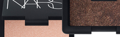
¡Buenas! Como ya sabréis algunas si me seguís en Twitter, me compré varias cosas de la colección Holiday 2011 de NARS. Pese a tener fecha de lanzamiento en Navidades, a España llegó hace relativamente poco, así que seguramente podáis encontrar todavía estos productos en el stand. Llevo ya un tiempo probando estos dos productos, y como me habéis preguntado mucho acerca de cómo usarlos, quería enseñaros un maquillaje que me hice el otro día, para también hablaros un poco acerca de ellos y cómo sacarles el máximo partido.
Los productos en cuestión son la sombra en crema Ponderosa, y el polvo iluminador Miss Liberty.
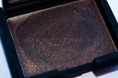
¿No es preciosa? Me parece un tono muy particular, es un marrón avellana muy intenso y además tiene distintos reflejos de varios tonos.
Antes de continuar, quisiera hablaros un poco de las sombras en crema de NARS, y lo que he aprendido de ellas desde hace ya varios años que llevo usandolas:
-
Las sombras en crema de Nars no fueron diseñadas para usarse solas. Esto es algo que me dijo un maquillador internacional de Nars, hace ya muchos años en el stand de Harvey Nichols en Londres, y he comprobado que es totalmente cierto. Lo primero que notamos cuando usamos una sombra en crema de Nars, es que son muy grasas. Si las usas sin preparar el párpado con una prebase y no aplicas nada más encima, lo que vas a obtener son unos bonitos pliegues al instante. Pero esto tiene un sentido y es que, precisamente al ser tan grasas, las sombras en polvo que apliquemos encima se adhieren a la perfección, fundiéndose además de forma totalmente homogénea, sin dejar parches. Esto no lo podemos conseguir con productos más secos. Si queremos un producto en crema que sea fijo para usar en el párpado, tenemos en el mercado productos como los Aquacream de Make Up Forever, totalmente resistentes e inalterables.
-
Hay que trabajarlas rápido y controlar la cantidad. Si aplicamos un pegote de sombra, lo más seguro es que ese exceso de producto se manifieste en forma de pliegue al cabo de un rato, y esto ya no sólo se aplica a las sombras de Nars en particular, si no a cualquier producto graso en general. Lo mejor es usar una brocha sintética plana (me encanta la 242 de MAC, es perfecta), y no usar los dedos, porque con ellos vamos a aportar todavía más grasa al párpado, por el calor y el sebo que producen. Hay que extender y difuminar bien cada capa que demos (normalmente con dos es suficiente), no dejar ningún pegote ni corte. Al aplicar la sombra en polvo encima, es importante hacerlo a pequeños toques, para que el pigmento se adhiera y se funda bien.
-
Usar prebase, siempre. Alguna vez las he usado para hacerme un ahumado, olvidando la prebase por las prisas y los pliegues aparecen a los pocos minutos. Pero cuando aplico prebase debajo, he estado maquillada jornadas de trabajo de 8 horas, y he llegado a casa con las sombras como recién aplicadas, 0 pliegues.
Yo empecé a usar prebases hace relativamente poco, normalmente no las uso a no ser que o bien el párpado sea muy graso, o que el producto lo requiera, como es en el caso de las sombras en crema. He probado varias y las que más me han gustado han sido la FY Eye de Benefit (retirada) y la Smudge Proof de NARS, que sin duda os puedo decir que es buenísima, deja el párpado súper suave y las sombras se trabajan fenomenal sobre ella, aparte de ser súper efectiva contra los pliegues.
Obviamente, siempre hay excepciones, cada piel (y párpado) es un mundo, y seguramente a algunas de vosotras no os funcionen bien, pero si no habíais probado a usarlas así, espero que mis consejos os sean de ayuda para poder aprovecharlas. También influyen otros factores como por ejemplo tener el párpado caído, o tener muy poco párpado móvil, cuanto menos amplitud haya, más se va a acumular el producto en el pliegue. En ese caso, mejor usar sombras en polvo, o de usar productos en crema, que sean más fijos.
En este maquillaje he combinado la sombra Ponderosa con la sombra en polvo Busted de Urban Decay, de la paleta Naked 2. La elegí porque se parecen mucho, y al juntar textura cremosa con polvo, se resalta lo mejor de ambas. Si no tenéis esta sombra, de MAC se me ocurren Twinks, Mulch, Sable, 100 Strokes (esta es súper parecida)… pueden funcionar igual de bien.
NARS Ponderosa, sobre la prebase Smudge Proof Eyeshadow Base.
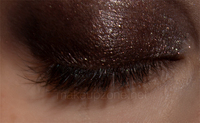
NARS Ponderosa + Urban Decay Busted
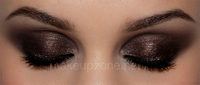
- Después de la Ponderosa, apliqué la Busted en todo el párpado, y me ayudé de la sombra Tease en la cuenca del ojo.
- Después con sombra en polvo negra, Blackout, difuminé un poco de negro a ras de las pestañas superiores e inferiores, para enmarcar aún más el ojo, y maquillé la línea de agua con el Chromaline negro de MAC.
- En el arco de la ceja apliqué la sombra Foxy, e iluminé en el centro de la ceja con la sombra Bootycall.
- Todas estas sombras son de la paleta Naked 2 de Urban Decay.
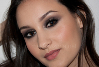
- En la piel, utilicé la base Sheer Glow de Nars en el tono Fiji en todo el rostro, y un tono más oscuro, Barcelona, para contornear sutilmente los pómulos.
- Como corrector, el Select Moisturecover de MAC en el tono NW20. Fijé todo con los polvos sueltos de Illamasqua en el tono LP135.
- En los labios, el labial Dolce Vita de Nars.
- En las mejillas, el colorete Dolce Vita de Nars.
¿Qué os puedo decir del iluminador Miss Liberty?
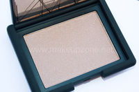
Bueno, la primera vez que lo vi me pareció que era demasiado brillante. Pero cuando vi cómo Uzo lo aplicaba en la modelo cambié de opinión. Lo veo más para la tarde/noche que para el día, donde prefiero texturas más naturales, ya que on la luz artificial nos podemos permitir abusar un poco más de los brillos.
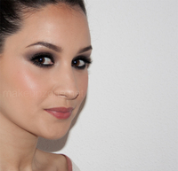
En brillo en la piel es bastante evidente, así que depende de tu gusto personal y de lo agusto que te sientas con ese efecto. La cantidad que hay que aplicar es mínima, o entonces sí que veremos purpurina… en definitiva me parece un producto perfecto para añadir shimmer a los coloretes mates, ya sean el polvo o en crema.
He leído opiniones de todo tipo, hay gente a la que le parece muy cantoso, pero a mi me ha gustado, aunque también tengo que decir que a mi me encantan los iluminadores, me siento cómoda con ellos, pero si eres una persona que busque un iluminador sutil, es mejor que busques otro.
Espero que os haya sido de ayuda, ¡nos vemos pronto! ;)
Cómo lavo mis brochas y pinceles
Tue, 13 Dec 2011 12:52:32 +0000
Buenas! El título de esta entrada es una pregunta que me llega constantemente, en vez de responder por varias vías creo que es más fácil para mi hacer una entrada, y poder remitir a ella cada vez que alguien tenga esta duda. Tengo que empezar diciendo que la frecuencia con la que yo lavo mis [...]
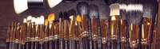
Buenas! El título de esta entrada es una pregunta que me llega constantemente, en vez de responder por varias vías creo que es más fácil para mi hacer una entrada, y poder remitir a ella cada vez que alguien tenga esta duda.
Tengo que empezar diciendo que la frecuencia con la que yo lavo mis pinceles es mayor a la de cualquier persona que les de un uso simplemente personal y ocasional. Al ser maquilladora las uso constantemente y es súper importante para mi que estén bien desinfectadas, limpias y en perfecto estado. Son diferentes las formas dependiendo de la brocha y el tipo de pelo, pero en general el mantenimiento es muy sencillo. Espero que os sea de ayuda para aquellas que tenéis esta duda.
Antes de empezar, quisiera recomendaros que le echéis un vistazo a esta entrada sobre la higiene en los pinceles que hice ya hace algún tiempo.
Hay muchos tópicos acerca de los productos que son buenos o malos para limpiar los pinceles. Uno de los más extendidos es que el jabón tipo Fairy es perjudicial para el pelo de nuestras brochas y pinceles de pelo natural. Eso sería cierto si lo aplicásemos a nuestro propio cabello, nos retiraría demasiada grasa y no lo trataría nada. En los pinceles, lo único que queremos es eliminar el resto de producto, restos grasos y bacterias, no necesitamos acondicionarlo ni tratarlo, de hecho, el uso de champús con demasiadas siliconas o ingredientes que suavicen en exceso, puede apelmazar el pelo y no trabajará igual, ni tampoco el pigmento se adherirá correctamente. Si miramos los ingredientes, no dista mucho de los que podemos encontrar en un champú clarificante. Tengo brochas y pinceles desde hace más de 8 años en perfecto estado, si este método dañase el pelo, ya lo habría notado.
Importante
Hay que lavarlas siempre en la dirección del pelo, es decir, que el agua caiga desde la base de la brocha hacia la punta, presionando ligeramente el pelo para aclarar el jabón. Si lo hacemos al revés se abrirán más. Al quitarles el exceso de agua antes de dejarlas secar, hay que hacerlo con leves presiones, nunca frotando ni aplastando la punta de la brocha contra la toalla, porque nos la vamos a cargar con el tiempo.
Conviene lavar las brochas nuevas antes de usarlas. En un primer momento os puede parecer que no tiene sentido: son nuevas y están limpias. Pero la verdad es que no sabemos por dónde han pasado esos pinceles, ni quién los ha tocado. El segundo motivo es que al lavarlas por primera vez, le damos más forma y se caerán los dos o tres pelos que deban caerse.
Limpieza diaria de uso personal y profesional entre clientes
Existen muchos productos en el mercado que permiten un lavado y secado rápido de los pinceles, sin necesidad de aclararlos. Este método es el más cómodo para limpiar nuestras brochas después de cada uso diario, y en el caso de profesionales, entre diferentes clientes, porque nos permite tener la brocha limpia y desinfectada en pocos minutos.
Para uso personal, tampoco hace falta limpiarlas cada día, pero sí es recomendable al menos una vez a la semana dependiendo de la frecuencia con que las usemos. Aunque sí recomendaría lavar diariamente las que usemos con productos grasos (como base de maquillaje, corrector, etc), ya no sólo por higiene, si no porque la brocha al secarse se quedará apelmazada y dura y no trabajará igual.
Hay que tener también cuidado con las que utilicemos con los delineadores en gel, si no las limpiamos nada más acabar, el producto al secarse se hace muy duro, y podemos deteriorar el pelo al intentar lavarlas después. Es mejor hacerlo cuando el producto aún está blando.
Recomendaciones:
MAC Brush Cleanser
Parian Spirit Cleanser
Make Up Forever Brush Cleanser
Limpieza a fondo
Dependiendo cómo estén de sucias las brochas y qué productos haya usado, las limpio con champú o con Fairy. Si las brochas están sucias simplemente con producto en polvo, utilizo champú corriente, preferiblemente uno que sea bastante básico, sin acondicionadores, siliconas ni nada que pueda apelmazar el pelo. Ahora mismo estoy usando el mismo que uso para mi pelo, el de Almendras de Carrefour, y se quedan genial. También hay gente que las lava con pastilla de jabón y el resultado es muy bueno también, lo bueno es que no hay que aclarar tanto, deja menos residuo.
Ahora bien, si el pigmento es muy difícil de eliminar, o he usado productos grasos (base, corrector, sombras en crema…), o acabo de usarlas en un cliente, siempre uso Fairy. Elimina la grasa y el pigmento súper rápido y sin esfuerzo, además como contiene alcohol, desinfecta.
Nunca les he puesto mascarilla ni acondicionador a las brochas, en mi opinión es innecesario, a no ser que hayamos maltratado mucho la brocha con algún producto, o sea muy vieja y queramos tratarla (aunque en ese caso yo prefiero comprar una nueva directamente).
Si he utilizado los pinceles en algún cliente con alguna infección evidente (acné, heridas, etc), además de lo anterior, me gusta rociarlas con alcohol para eliminar cualquier tipo de bacteria que pueda quedar. Esto siempre de forma ocasional, las brochas no se deben lavar con alcohol asiduamente, destrozaríamos el pelo, se destiñe y se parten las puntas. Además, el alcohol siempre es posterior al lavado, porque no arrastra el pigmento, así que no es útil como limpiador. Es mejor usar el alcohol de 70º en vez del de 96º, porque penetra mejor en el microorganismo. El alcohol absoluto hay que diluirlo porque si no no sirve para desinfectar. Es un dato que desconocía y que una chica que trabaja en un hospital me ha aclarado.
Recomendaciones:
Champú Johnson’s Baby
Champú Almendras y vainilla Carrefour
Fairy de pepino y aloe vera
Alcohol 70º
Mantenimiento
Habréis oído hablar muchísimo de las fundas Brush Guards. Son unas fundas de fibra flexibles donde metemos la brocha mientras está húmeda. Esto hace que se seque manteniendo el pelo en su sitio, no se abren y les devuelve su forma original. Las Brush Guards son muy caras, podéis encontrar lo mismo en las ferreterías, tiendas de informática o tiendas online, con el nombre de fundas extensibles para cables. Es el mismo material, lo hay en varios colores y se vende por metros (1 € o 2€ el metro). Hay varios grosores, que podemos usar en función del tamaño de la brocha, y podemos cortar a nuestro gusto. Os recomiendo este vídeo de Arroin80 sobre este método.
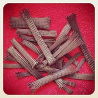
El resultado es unas brochas renovadas y con el pelo en su sitio y más suave. Esto no lo hago siempre que las lavo, notareis que les hace falta cuando veáis que después de varios lavados o un uso continuado, el pelo tiende a separarse más de lo normal.
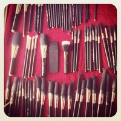
Con las brochas que sí me toca hacerlo con frecuencia, por ejemplo, es con las E25 de Sigma. En apariencia son muy parecidas a las 217 de MAC, pero en la práctica no tienen nada que ver: el pelo se abre mucho después de varios usos, así que este método me ayuda un poco a mantenerlas. Os servirá de ayuda si tenéis brochas que por su calidad inferior o por cómo las hayáis tratado, se abran más de lo normal. Notareis que las brochas tardan más en secarse, ya que el pelo está más junto.
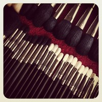
Lo que también hago a veces, de forma muy puntual y sobre todo en las brochas más buenas y caras, es pasarles un peine después de lavarlas. Lo podéis ver en este vídeo de Icegirl.
Madrid: Cursos y Telecinco
Fri, 09 Dec 2011 20:09:27 +0000
¡Buenas! He estado unos días desaparecida, el motivo ya lo conocéis muchas, y es que estuve unos días en Madrid trabajando. Por una parte, el Lunes y el Martes estuve dando cursos de maquillaje con mi amiga y maquilladora María Moreno. Desde aquí queríamos de nuevo daros las gracias a todas y cada una de las [...]
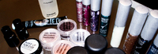
¡Buenas! He estado unos días desaparecida, el motivo ya lo conocéis muchas, y es que estuve unos días en Madrid trabajando. Por una parte, el Lunes y el Martes estuve dando cursos de maquillaje con mi amiga y maquilladora María Moreno. Desde aquí queríamos de nuevo daros las gracias a todas y cada una de las que asististeis al curso, nos lo pasamos genial y estamos súper contentas de ver que os gustó tanto, ¡no podemos pedir más! Ha sido una experiencia muy gratificante.
Además, estuve maquillando en Telecinco para el programa “Qué tiempo tan feliz”, ¡fue genial!
Como sabéis las brochas para el curso fueron proporcionadas por Sigma Beauty, se hizo un pack para cada alumna con las brochas que consideramos que merecen la pena, además todas nuestras brochas y pinceles estuvieron disponibles allí para quien las necesitara. Sigma tuvo la amabilidad de ofrecer un código de descuento exclusivamente para las asistentes, y tengo que decir que tanto María como yo nos enamoramos del pincel E45, es ideal para marcar con precisión la cuenca del ojo, tiene una punta finísima.
Todo nuestro material fue utilizado por las alumnas de forma totalmente libre. El curso estaba enfocado a las fiestas, estuvimos practicando cómo hacer ahumados, aplicados a las necesidades y características de cada alumna de forma personal, además de practicar diferentes técnicas para aplicado el glitter y las pestañas postizas. Enseñamos a trabajar la piel de forma similar a como se hace en televisión, aplicado al maquillaje social, para conseguir la máxima duración y rendimiento para la exposición fotográfica.
Una foto con uno de los grupos.
El Domingo estuvimos maquillando para el desfile del diseñador Javier Simorra, en el programa de Telecinco “Qué tiempo tan feliz”. El desfile aún no ha sido publicado, pero lo compartiré con vosotras una vez lo tenga. No puedo publicar fotos de las zonas privadas de Telecinco, pero os dejo algunas un poco chorras :P
Ha sido un viaje intenso de trabajo pero súper divertido. Ahora toca ponerse manos a la obra, que tengo varias entradas preparadas para estos días :)